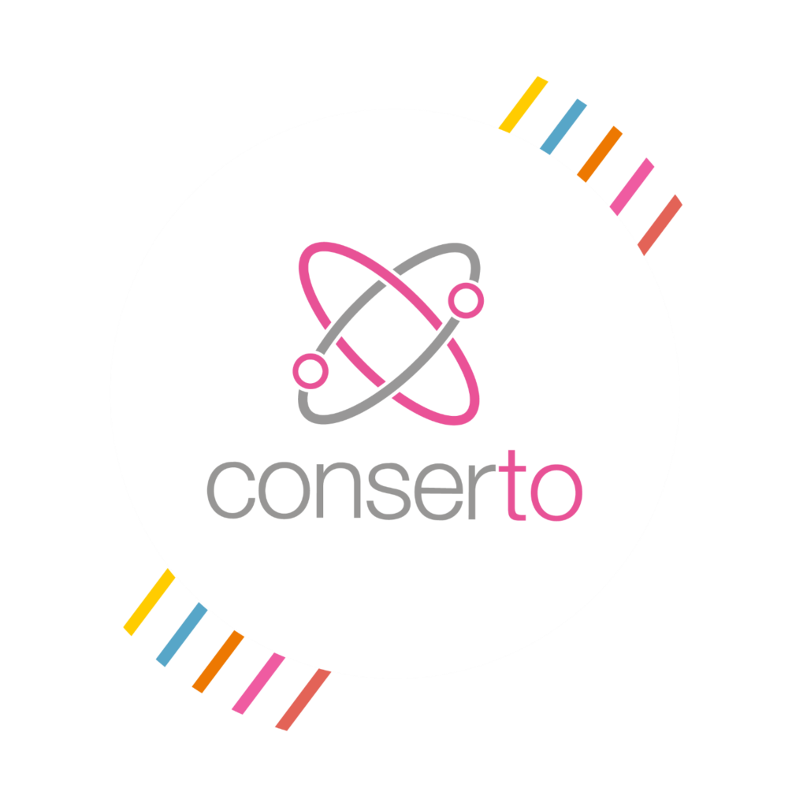

Contexte du Stage:
Durant le semestre 4 de ma formation en BUT Informatique, j'ai réalisé un stage de 12 semaines qui m'a permis de mettre en pratique les compétences du parcours RACDV. Mon projet principal portait sur la montée de version d'une application Java de Java 8 vers Java 21, en passant par les versions intermédiaires (Java 11, Java 17). Ce projet incluait également la montée de version de Spring Boot de 2.7.18 à 3.4.2. Ce travail s'inscrivait dans une équipe fonctionnant en méthodologie Scrum, avec des daily meetings, une planification de sprint chaque vendredi, et une coordination constante avec les développeurs et lead techs.
